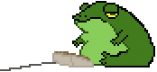

Ribbbit! Open fixed sample results
Read the fixed sample article
Independent 8088retro instance of Action Retro's FrogFind. Instance source (GPL-3.0). Frog image credits.
Local fixture: links open fixed sample results, not live search. Image tests